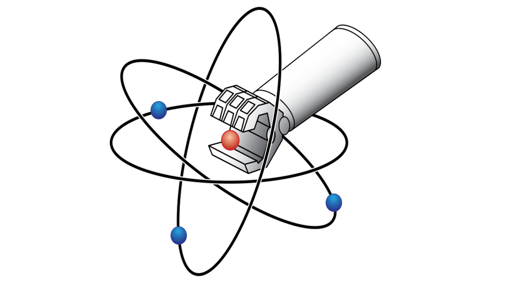
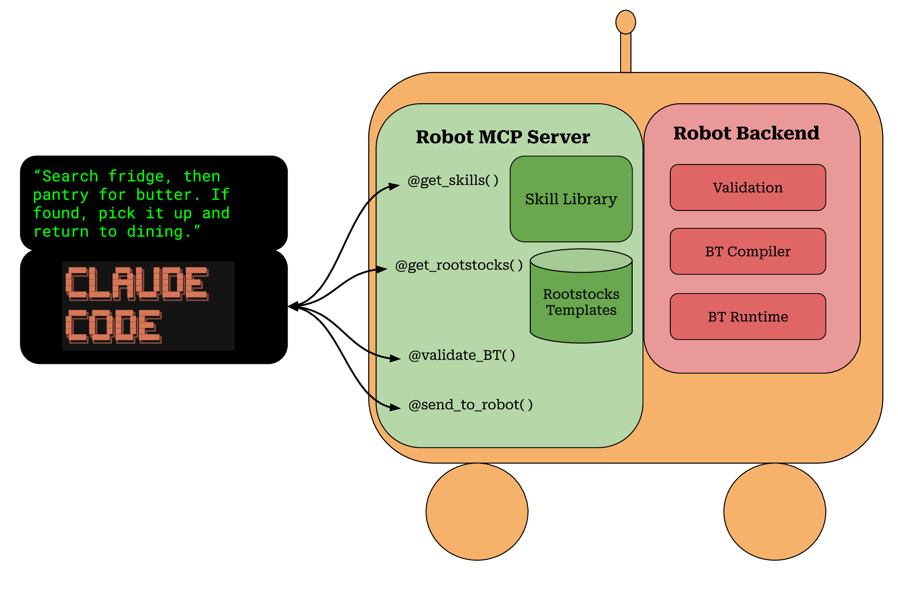

Abstract
Reserved for the paper abstract. This should become a short research summary that explains the BT generation method, the evaluation setup, and the main empirical takeaway.
Project Page



Results Explorer
The controls below filter the current catalog. Selecting a task reveals its prompt, generated BT, symbolic world state, and evaluation outcome.
{}
{}
{}
{}
This is the simulator's current symbolic state: robot location, held object, and where known objects are right now.
{}